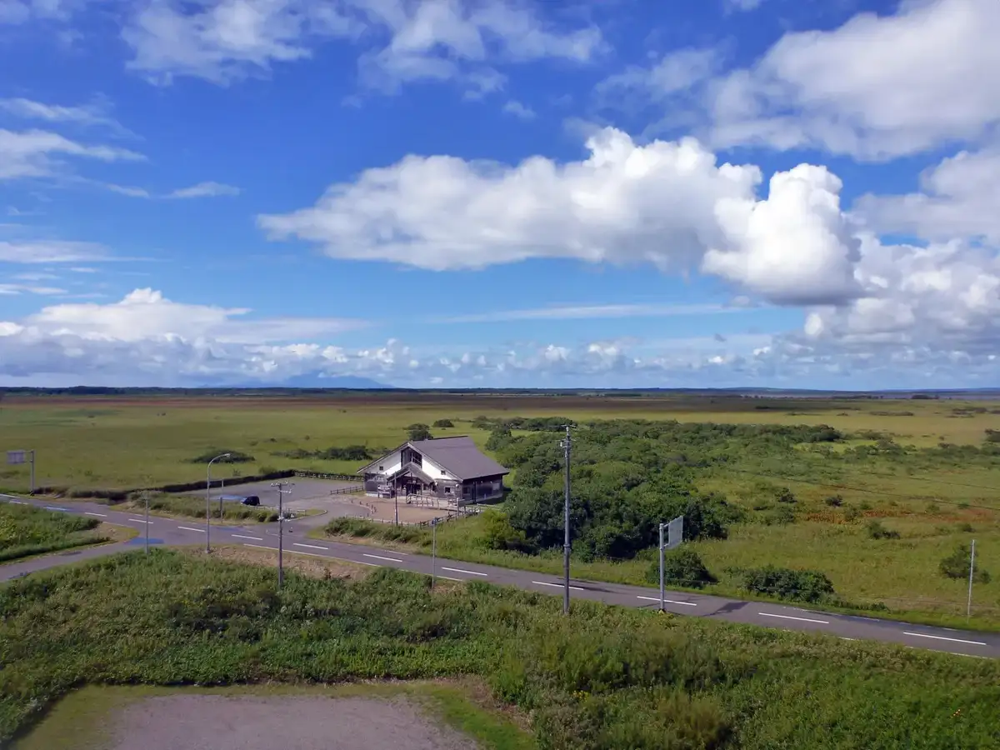
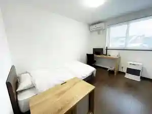
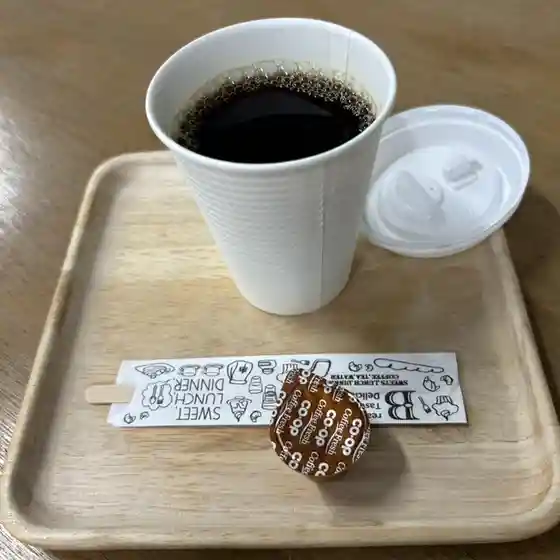
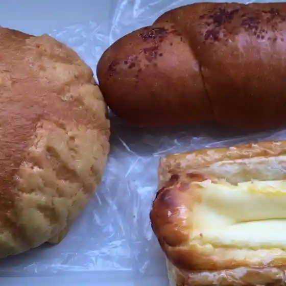
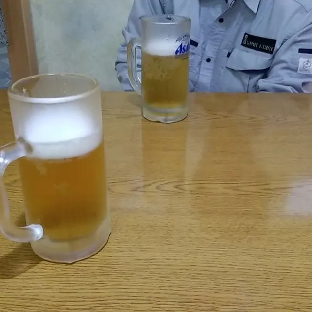
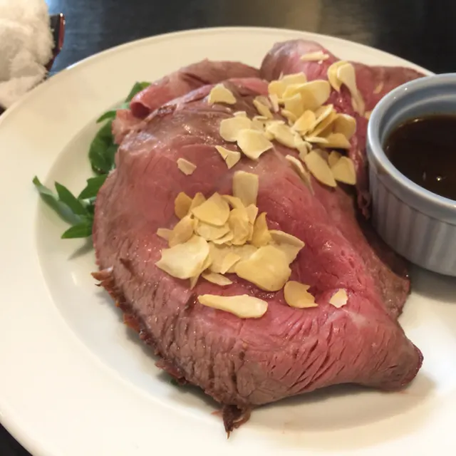
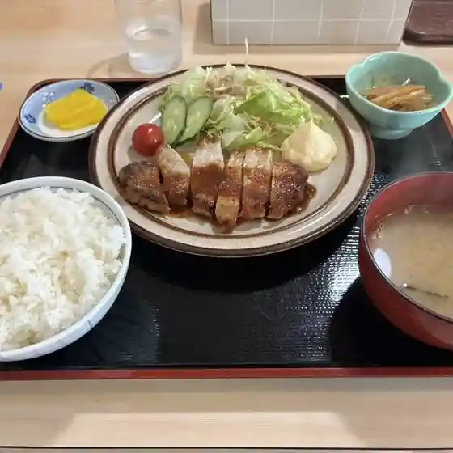
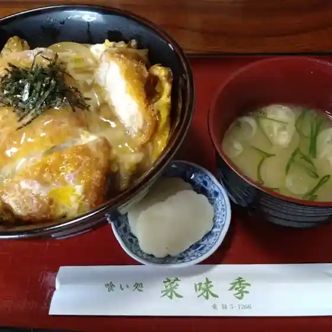
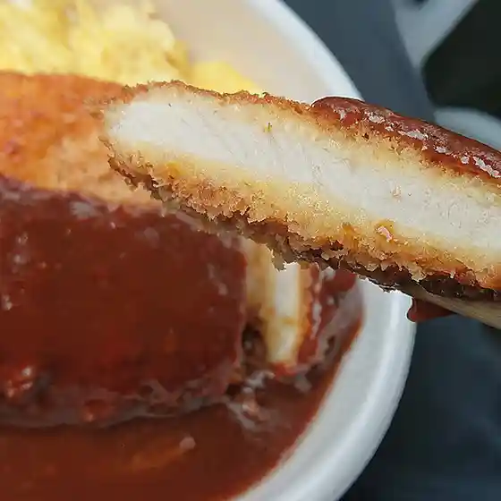

Horonobe
Horonobe · Hokkaido
Horonobe
Highlighted on the Hokkaido map.

Stay
スマートホテル幌延

Sumaatohoteru Horonobe
Dining
ホロカル

Horokaru
レイポモ・トントゥ

Reipomo Tontou
居酒屋のんべえ

Izakaya Nonbee
さくら

Sakura
和

Wa
居酒屋南東風

Izakaya Nantou Kaze
菜味季

Na Aji Ki
セイコーマート ほろのべ店

Seikoomaato Horonobe Mise
名山荘
Meizan Sou
極楽とんぼ
Gokuraku Tonbo
レストラン ポロ
Resutoran Poro
Qマート 幌延店
Q Maato Horonobe Mise
サロベツ会館
Sarobetsu Kaikan
喰い処菜味季
Kui Tokoro Na Aji Ki
カフェハウス ラストチャンス
Kafehausu Rasutochansu
フードインタイムリーイトウ 本店
Fuudointaimuriiitou Honten
令和 構内食堂
Reiwa Kounai Shokudou